Statistics
Using data to find patterns, test ideas, and make better-informed decisions.
Probability · Regression · Statistical modeling
Statistics · Software Engineering
Greetings, I’m Anna, an Idaho State University senior who likes translating data into real-world insights
Get to know me01 / A little about me
I’m pursuing studies in statistics and software engineering, with minors in mathematics and computer science. I like work that rewards both careful thinking and creative problem-solving.
Whether I’m exploring a dataset, writing code, or outdoors, I am happiest when I’m learning new things and can take my time with the details.
"The rules we use to interpret data and information are the rules we use to understand the world itself—and how we understand our world affects how we shape it."
02 / My academic focus
Using data to find patterns, test ideas, and make better-informed decisions.
Probability · Regression · Statistical modeling
Building a strong foundation in programming, software design, and computational thinking.
C++ · C# · SQL · HTML · CSS
03 / My toolkit
04 / Away from my desk
Riding my bike, dancing, camping, hiking, going to the orchestra, making music, captioning memes, and reading (often comic books) with my cat (Steve).
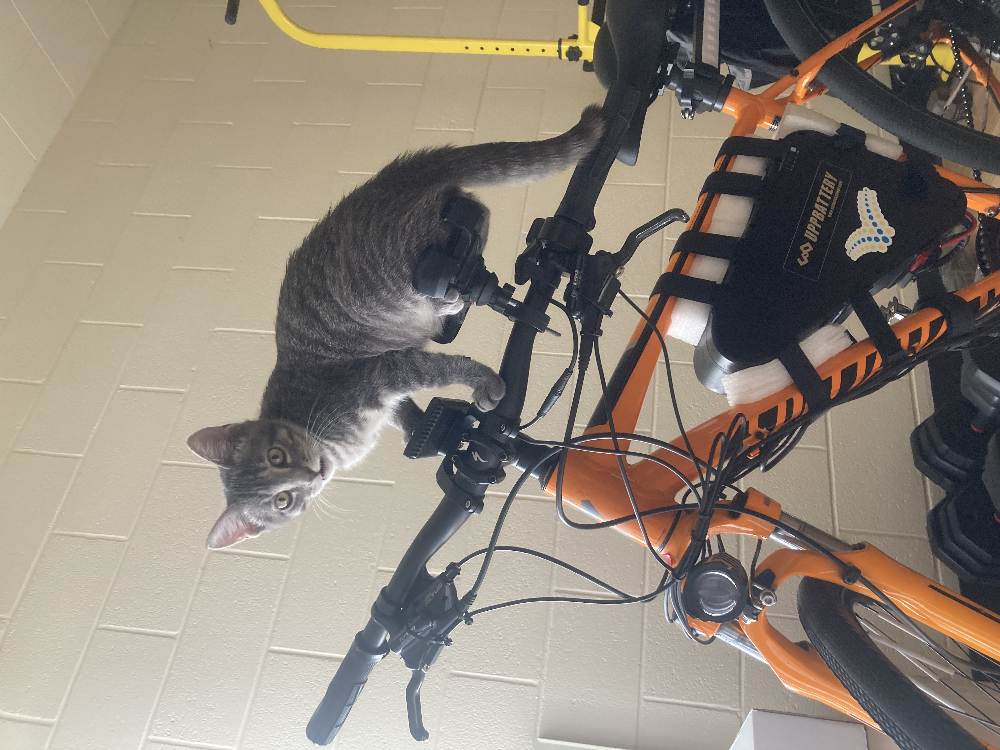
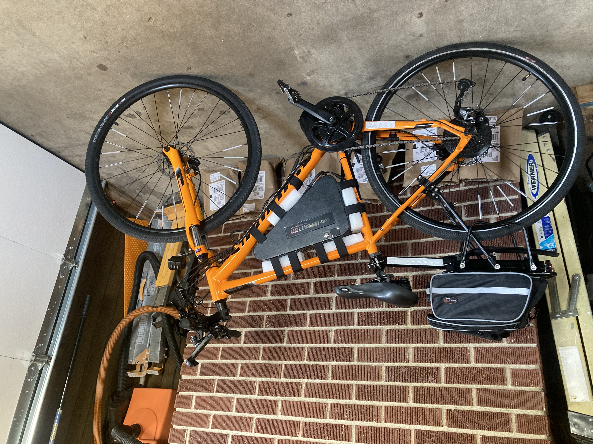
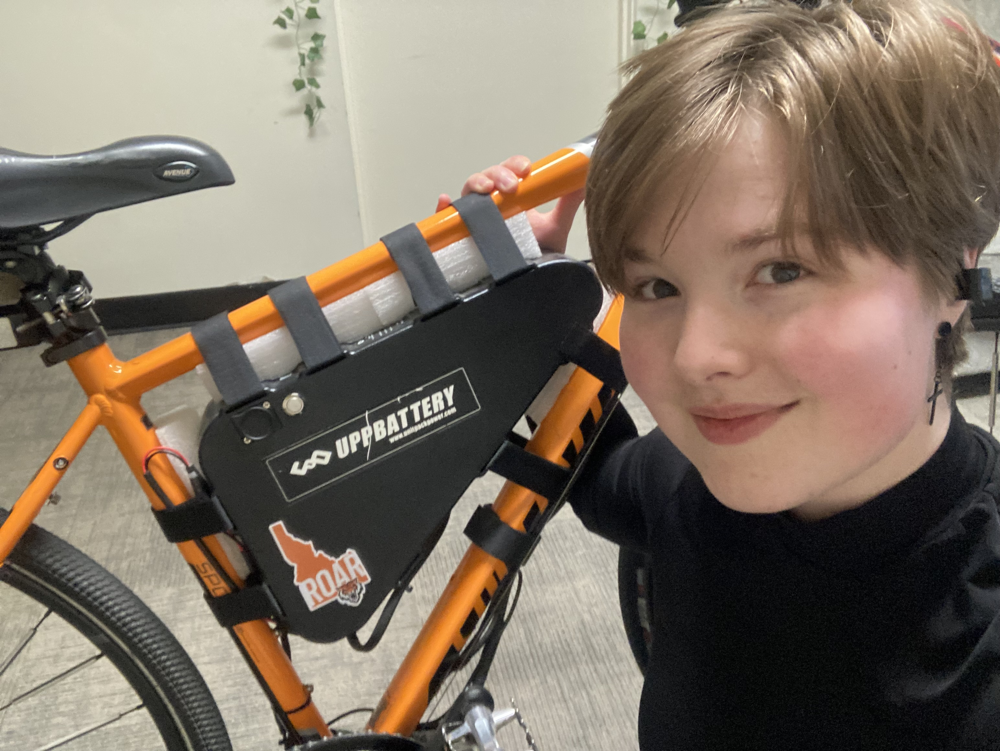
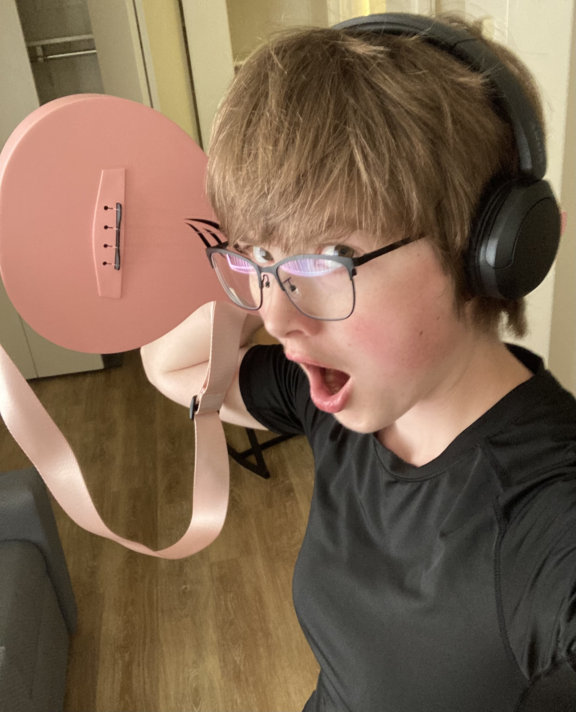
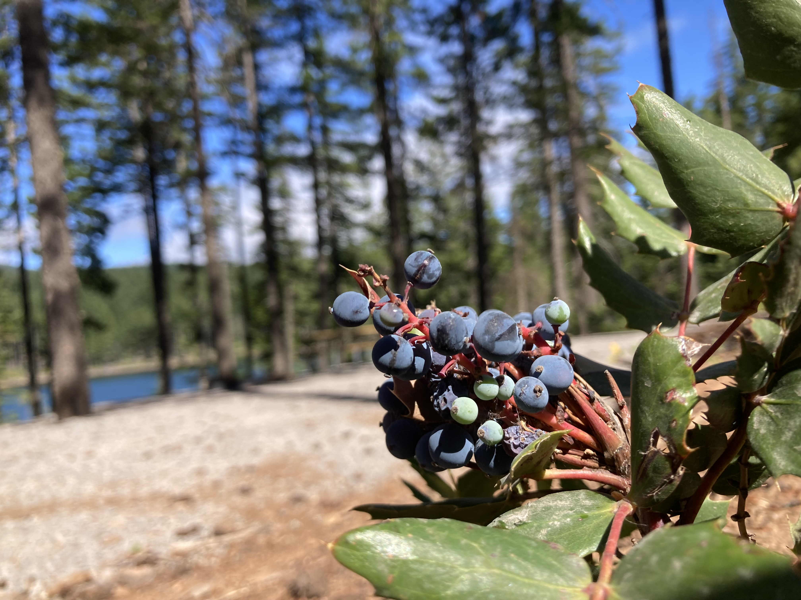
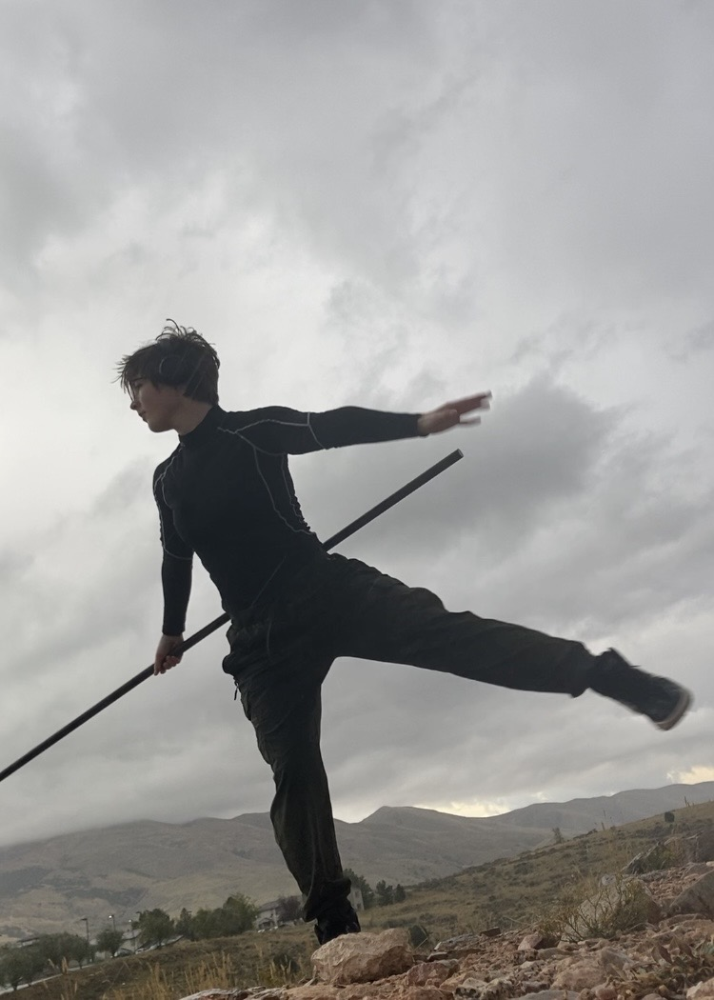
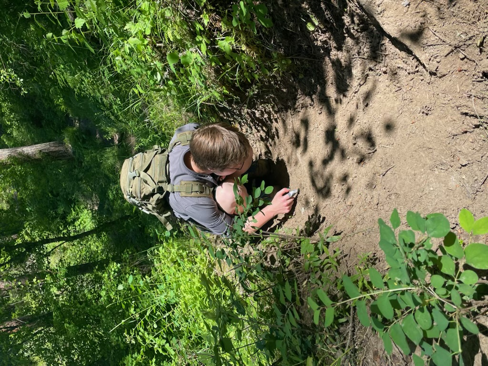
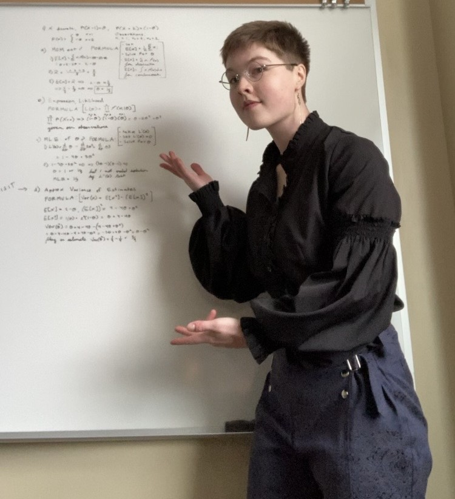
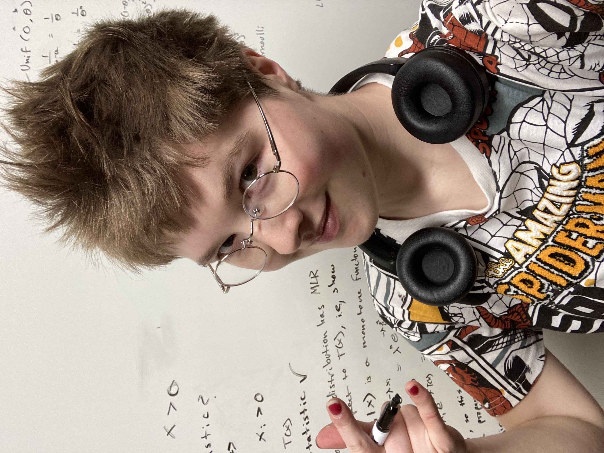
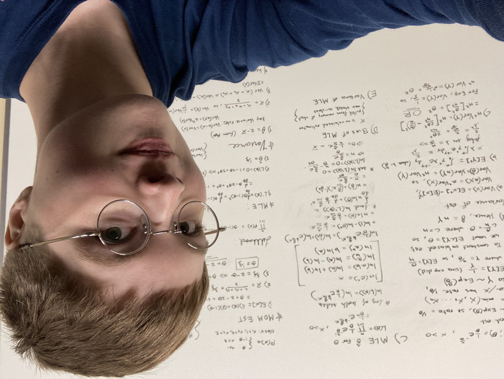
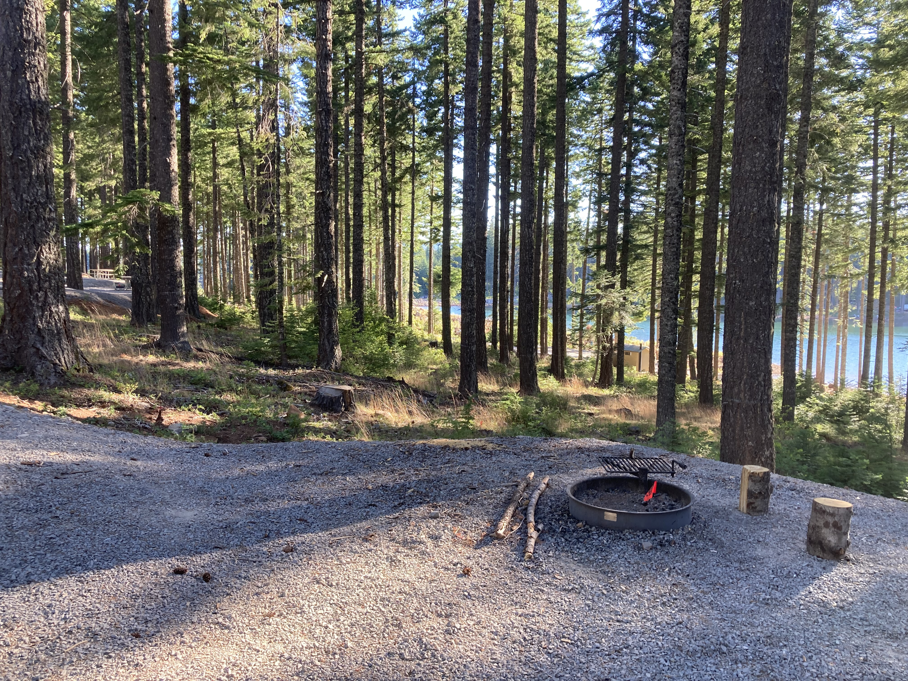
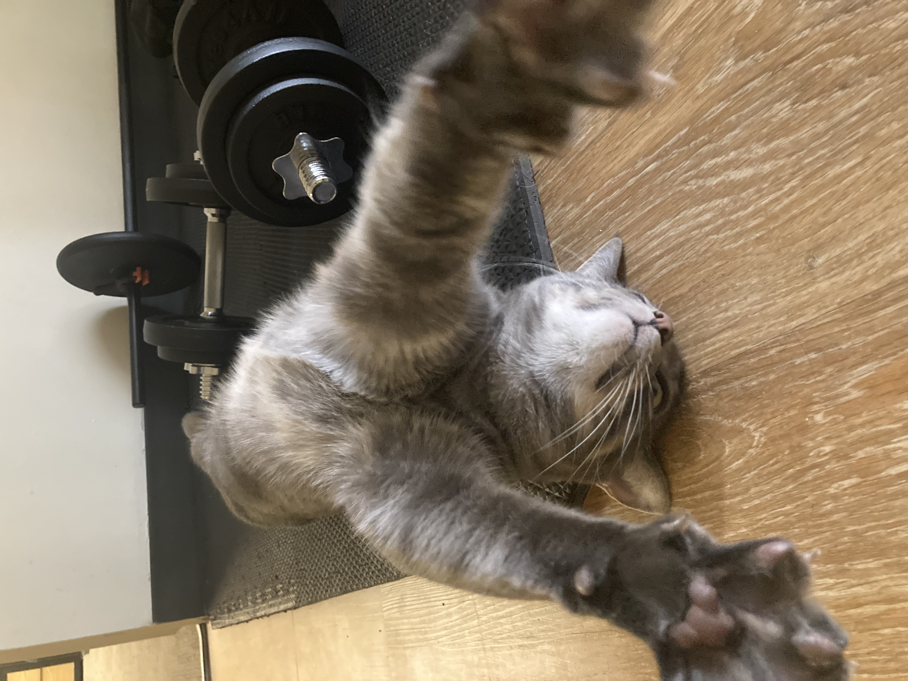
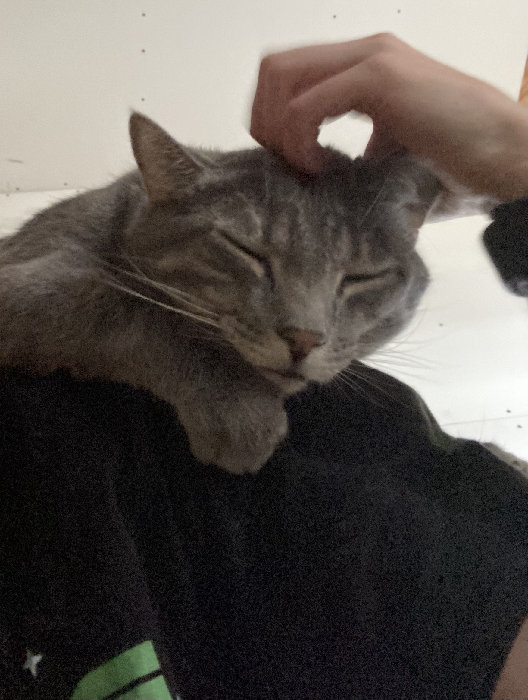
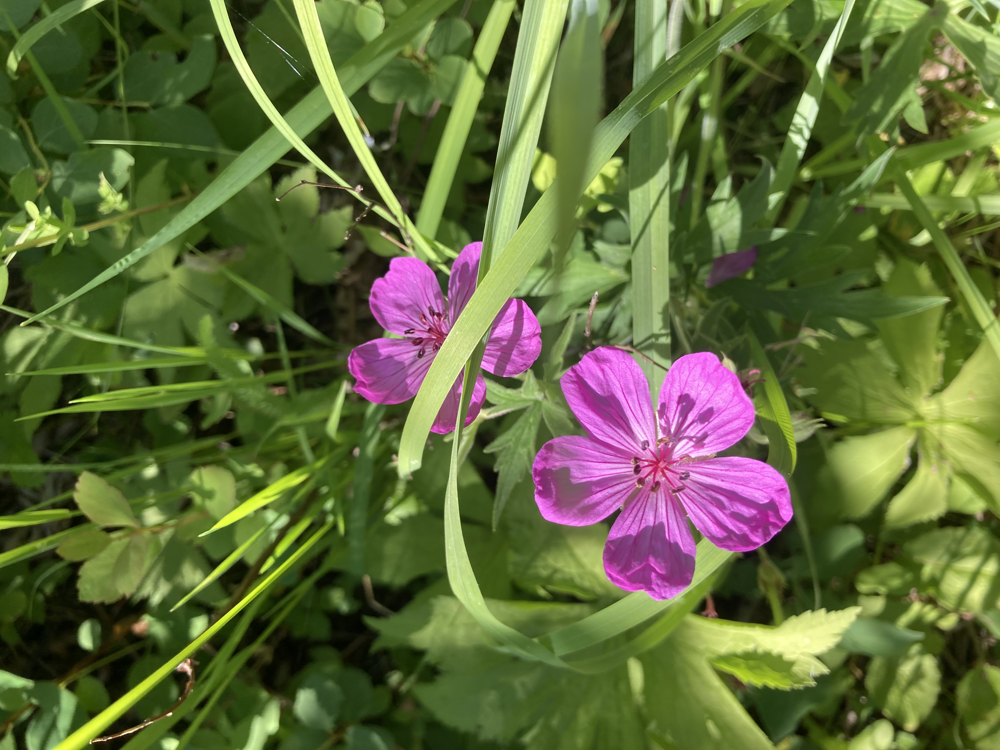